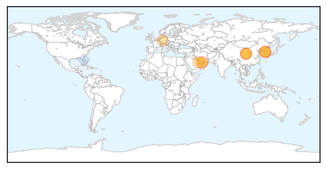
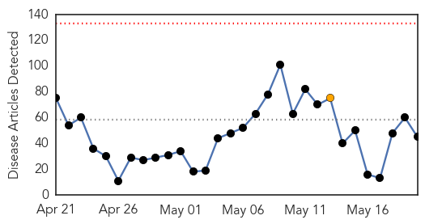
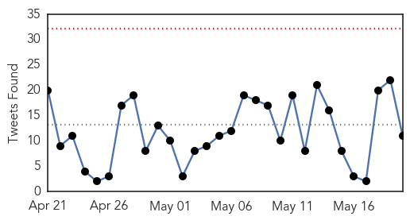
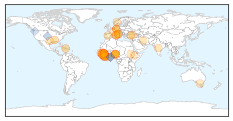
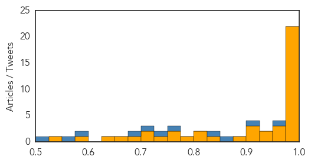

MERS
30-Day Web Trend
1 alerts, 0 warnings

30-Day Twitter Trend
0 alerts, 0 warnings

Article Locations
Article Confidences

Top Articles:
- 0.997
- Otago Daily Times Online News : Otago, South Island, New Zealand & International News
- 0.997
- Seoul confirms first MERS infection case
- 0.997
- South Korea Reports First MERS Virus Case
- 0.997
- South Korea reports first case of MERS virus; patient stable
- 0.996
- Abu Dhabi health authorities confirm second Mers case
- 0.995
- South Korea reports first case of MERS virus; patient stable
- 0.993
- South Korea reports first case of MERS virus; patient stable, news, Health News, AsiaOne YourHealth
- 0.993
- South Korea reports first case of Mers virus; patient stable, East Asia News & Top Stories
- 0.990
- Abu Dhabi lorry driver diagnosed with Mers
- 0.971
- South Korea has its first MERS case; UAE finds 2
Top Tweets:
- 0.879
- AFD Blog `UAE Health Authority: 2 More Coronavirus Cases' MERS-CoV http://t.co/hO5j1RTnBd
- 0.626
- Avian Flu Diary: South Korea Reports 1st Imported MERS-CoV Case http://t.co/0AGSQ2JRFH
Ebola
30-Day Web Trend
0 alerts, 1 warnings

30-Day Twitter Trend
0 alerts, 0 warnings

Article Locations
Article Confidences
Top Articles:
- 1.000
- Ebola numbers rise again in Guinea and Sierra Leone
- 1.000
- After Ebola, WHO Launches New Outbreak Workforce
- 1.000
- Nigeria, seven others to begin Ebola vaccine trial
- 1.000
- Sierra Leone berates Ebola quarantine escapees as cases surge
- 0.999
- What We Didn't Learn From the Ebola Outbreak
- 0.999
- WHO says it is probing Ebola infection of Italian in Africa
- 0.999
- Ebola is found in doctor's eye months after virus left blood
- 0.998
- WHO says it is probing Ebola infection of Italian in Africa
- 0.998
- Ebola cases rise, expand in Guinea, Sierra Leone
- 0.998
- Spike in Ebola cases – Guinea, Sierra Leone
- 0.998
- China Pledges Long-Term Support to Boost Africa's Emergency Health Readiness
- 0.994
- WHO says Ebola ‘won’t go quietly’
- 0.994
- WHO says Ebola ‘won’t go quietly’ as new case numbers edge up
- 0.994
- Sierra Leone: Frontline Health Workers Sidelined in the Fight Against Ebola
- 0.993
- UN health agency responds to Ebola spike by deploying team on border of Guinea and Guinea-Bissau
- 0.993
- How the world is wiping out killer diseases
- 0.990
- Monash University researcher helps identify right type of Ebola vaccine trial
- 0.989
- Minister lauds Nigeria’s health system
- 0.988
- 5 things to know on latest outbreaks
- 0.987
- Ivory Coast shows how to keep Ebola at bay
- 0.985
- WHO Sets up $100m Contingency Funds for Healthcare Emergencies, Articles
- 0.981
- Senegal: Ebola Virus Disease outbreak, Emergency Appeal n° MDRSN010 - 6 month update - Senegal
- 0.966
- Ebola research: Fewer patients, but far more data
- 0.965
- Guinea: UNICEF Guinea Ebola Situation Report, 13 May 2015
- 0.962
- Ebola outbreak has not finished yet, WHO reports
- 0.944
- UNICEF Guinea Ebola Situation Report, 13 May 2015 - Guinea
- 0.936
- Sierra Leone Ambassador to Iran Woos Investors in Turkey
- 0.922
- Work to resume at Liberia hydro plant after Ebola outbreak
- 0.921
- Ebola Diaries Lessons in Listening
- 0.915
- In Guinea, reaching out to root out Ebola
- 0.884
- Local doctor returns to Africa to fight Ebola
- 0.839
- Commendations for Ebola-Free Liberia At ECOWAS 47th Meeting
- 0.818
- Chancellor Angela Merkel calls for new plan to tackle Ebola outbreak at 68th World Health Assembly
- 0.802
- HUMAN RIGHTS COMMISSION HOLDS CONSULTATIVE MEETING ON UPR
- 0.796
- Ebola survivor to speak at FHU benefit dinner
- 0.753
- Attacks on Health Facilities, Staff, Patients
- 0.750
- Fossil Fuel Titan Spins Ebola Crisis for Corporate Gain
- 0.729
- Coal company exploited Ebola crisis for corporate gain, say health experts
- 0.717
- Aussie nurses honoured with courage awards
- 0.703
- News in the Humanosphere: Ebola frontline workers grossly underpaid
- 0.675
- KONO DISTRICT HAS SPOKEN
- 0.666
- SAHR AND NYUMA FORGING SUSTAINABLE PEACE IN SIERRA LEONE
- 0.649
- MPOKE AND WASUNNA: Africa needs to address neglected diseases - Opinion
- 0.592
- The Post
- 0.527
- MAADA AND FATIMA BIO FOUNDATION TO COMMEMORATE FIRST ANNIVERSARY ON 30TH MAY IN LONDON
Top Tweets:
- 0.970
- RT: Not over....After reporting just 9 Ebola cases last week, Guinea + Sierra Leone reported 36 cases this week. @WHO: ht…
- 0.967
- Work to resume at Liberia hydro plant after Ebola outbreak - Reuters Africa http://t.co/yyxPdj0yi8 ebola EVD
- 0.915
- UH, Hawaii Biotech to develop Ebola vaccine for humans - Hawaii News Now http://t.co/qsvlWYb7Rm ebola EVD
- 0.900
- Doctors Link Risky Burials to Ebola Rise in West Africa - New York Times http://t.co/IC6ITBKM6P ebola EVD
- 0.878
- UN health agency responds to Ebola spike by deploying team on border of ... - UN News Centre http://t.co/CVTgzZFQJJ ebola EVD
- 0.855
- RT: Today on WHA68 SocialGood, @davidnabarro & Dr Brennan will discuss the Ebola outbreak & response: http…
- 0.844
- Ebola Update: 26,933 confirmed, probable and suspected cases reported in 3 most affected countries, with 11,120 deaths. EbolaResponse
- 0.829
- Local doctor returns to Africa to fight Ebola - WPRI 12 Eyewitness News http://t.co/ZwUN7fWQ1N ebola EVD
- 0.807
- Coal giant exploited Ebola crisis for corporate gain, say health experts - The Guardian http://t.co/9Lc41OULav ebola EVD
- 0.755
- RT: Follow MSF's now live tweeting the World Health Assembly WHA68 session on Ebola
- 0.737
- Army researchers look for permanent end to Ebola virus - United States Army (press release) http://t.co/U0YJGnOubf ebola EVD
- 0.709
- Work to resume at Liberia hydro plant after Ebola outbreak - Reuters Africa http://t.co/fWTyVDUPBd
- 0.680
- RT: New Ebola cases spike in Guinea and Sierra Leone http://t.co/XMj8H2U9vH…
- 0.668
- 20 May news on avianflu avianinfluenza Ebola EbolaResponse MERS NepalQuake WHA68 is here: http://t.co/PESpEG9Oy0
- 0.644
- Ebola survivor to speak at FHU benefit dinner - Jackson Sun http://t.co/UKtmq7s0RG ebola EVD
- 0.634
- Ivory Coast shows how to keep Ebola at bay - Deutsche Welle http://t.co/CyFgLVgpSj ebola EVD
- 0.618
- “Rogue” Chinese fishing fleets are taking advantage of Ebola and pillaging ... - Quartz http://t.co/qAvS3aSy9D ebola EVD
- 0.590
- Guinea sees climb in Ebola cases due to transmissions at funerals http://t.co/qLWzeBfm2R
- 0.565
- RT: Ebola in West Africa: SierraLeone now threatened by famine - orphans particularly vulnerable. http://t.co/qySEUVgnFB
- 0.517
- New flare up of Ebola cases in Guinea prompts urgent response https://t.co/uN56ouitGO EbolaResponse http://t.co/6qfj4r46hC